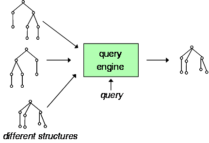
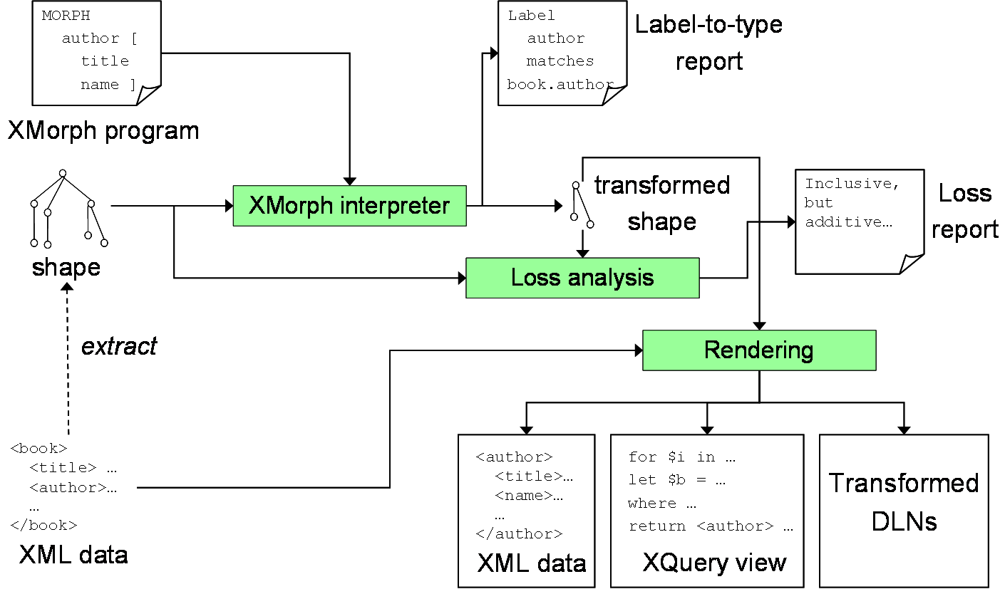

|
|
An Overview of XMorph
Flexible Querying for XML |
| Home | |
| Overview | |
| Virtual Hier. | |
| Tutorial | |
| Demo | |
| Download | |
| Publications | |
| Curtis Dyreson | |
| Home | |
| Publications | |
| Projects | |
| Software | |
| Demos | |
| Teaching | |
| Contact me | |
By imposing a single hierarchy on data, XML makes queries brittle in the sense that a query might fail to produce the desired result if it is executed on the same data organized in a different hierarchy, or if the hierarchy evolves during the lifetime of an application.
XMorph is a new, more flexible XML query language. XMorph is a shape polymorphic query language, that is, a single query can extract relevant data from a variety of differently shaped hierarchies as illustrated in the following figure. The same query is evaluated over different hierarchies to produce the same result.

XMorph performs a shape-to-shape transformation as illustrated in the following diagram of the XMorph architecture.

The XMorph data shredder distills an XML data collection into
a graph of closest relationships. These relationships are
exploited by the XMorph query evaluation engine to construct
a data collection to the shape specified in a query.
Curtis E. Dyreson © 2014. All rights reserved.